Heritage details for those who recognise them — unmistakably a hat shop to everyone. People who know, will know. But nobody has to guess.
Round 3 Direction
Based on client feedback from Round 2, we’re carrying forward the strongest elements from three concepts:
From A (Hatter’s Label): The ornamental framing, Victorian trade label warmth, and detailed hat illustration with engraving-style lines.
From C (Refined Wordmark): Maximum readability, clean typography hierarchy, Lock & Co.’s institutional restraint, and the bold hat silhouette that reads at any size.
From D (Gentleman’s Seal): The circular seal format, curved text authority, dot accents, and standalone stamp versatility.
A → Heritage DetailC → ReadabilityD → Seal Authority
1. Heritage Label Evolved
Victorian Trade LabelFrom Concept A
Concept A refined for clarity. The ornamental frame is simplified to a single elegant border with subtle corner accents. The hat illustration is bolder and cleaner — immediately recognisable even at small sizes. Typography has more breathing room with stronger hierarchy.
What changed: single border (was double), bolder hat strokes, larger wordmark, simplified corner ornaments. The feel of a premium hatbox label, modernised for legibility.
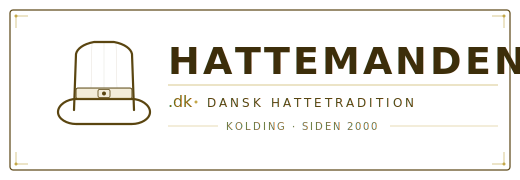
Horizontal LockupWarm Cream
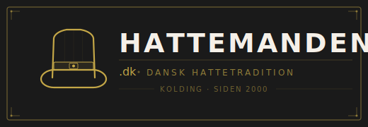
Horizontal LockupDark / Reversed
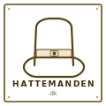
Icon / FaviconFramed Hat
2. The Hatter’s Seal
Wax Seal / Trade MarkFrom Concept D
Concept D refined for readability. The outer rings are bolder, the accent dots reduced from 12 to 8 for a cleaner rhythm. The central hat is larger and the curved text is bigger — readable even on business cards. The adjacent wordmark is more prominent.
What changed: thicker rings, fewer dots, larger hat, bigger curved text, bolder wordmark. Still feels like a quality stamp inside a hat — but now reads at a glance.
Seal + WordmarkWarm Cream
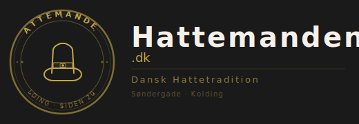
Seal + WordmarkDark / Gold
Compact SealFavicon
3. Frame & Seal
A + D HybridBest of Both
The richest variation — Concept A’s elegant frame containing Concept D’s seal as the primary icon, with a clean wordmark alongside. The frame gives the trade-label authority, the seal provides the standalone icon. A thin vertical rule separates the two halves.
Why combine? The frame establishes context (heritage trade), the seal works independently (favicons, stamps, watermarks). Together they create the most complete brand system.
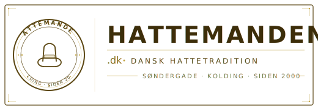
Frame + Seal + WordmarkWarm Cream
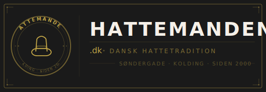
Frame + Seal + WordmarkDark / Gold
Frame + Seal IconFavicon
4. Hat First
Hat as HeroA Detail + C Restraint
The hat IS the logo. A large, prominent, beautifully drawn top hat with A’s engraving-style detail paired with C’s clean typography and restraint. No ornamental frame — the hat speaks for itself. A thin vertical rule separates illustration from type. Maximum impact, zero clutter.
The simplest way to say “hat shop” — let the illustration do the talking. For clients who want the strongest possible hat icon with clean, readable type alongside.
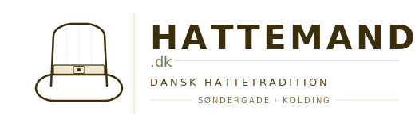
Hat + WordmarkWarm Cream
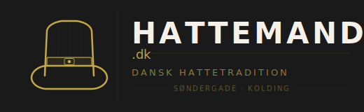
Hat + WordmarkDark / Gold
Hat IconFavicon
5. The Clean Stamp
D + C FusionModern Seal
Concept D’s circular seal stripped to essentials using C’s minimalist approach. A bold outer ring, a clean solid hat silhouette (not line-drawn), and curved text in Playfair Display (not Cormorant). No fussy dots or diamonds — just the essential shapes. Maximum favicon readability.
The “modern heritage” option. The bold silhouette hat reads at 16px. The thick ring makes it unmistakeable. C’s restraint meets D’s stamp format.
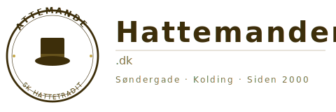
Clean Stamp + WordmarkWarm Cream
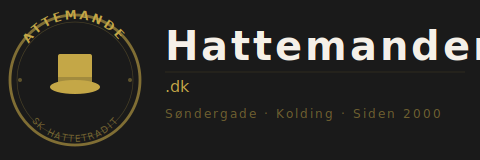
Clean Stamp + WordmarkDark / Gold
Clean StampFavicon
6. The Signature
Wordmark-ForwardC Elegance + D Accent
The most elegant variation — a large, beautiful wordmark takes centre stage with Concept C’s fine-rule sophistication, while a small seal accent from D anchors the left side. The name “Hattemanden” is the star. Three-dot ornament and horizontal rules create the Lock & Co. institutional feel.
For clients who want the name front and centre. The small seal provides the hat icon for standalone use, while the wordmark delivers maximum brand name recognition.
Signature WordmarkWarm Cream
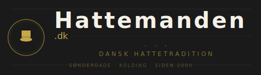
Signature WordmarkDark / Gold
Seal IconFavicon
Variation Comparison
Aspect
1. Heritage Label
2. Seal Refined
3. Frame & Seal
4. Hat First
5. Clean Stamp
6. Signature
Source
A refined
D refined
A + D
A + C
D + C
C + D accent
Heritage depth
Very high
High
Very high
Moderate
Low
Moderate
Instant clarity
Good
Good
Good
Excellent
Excellent
Excellent
Hat visibility
Prominent
Central
Seal center
Hero element
Silhouette
Small accent
Name readability
Strong
Strong
Strong
Very strong
Very strong
Dominant
Favicon quality
Good
Excellent
Good
Excellent
Excellent
Good
Packaging use
Excellent
Excellent
Excellent
Good
Good
Moderate
Website header
Good
Good
Good
Excellent
Good
Excellent
Complexity
Medium
Medium
High
Low
Low
Low–Medium
Peaky Blinders vibe
Strong
Strong
Strong
Moderate
Modern
Moderate
Our Recommendation
Based on the design principle of “rewarding depth, instant clarity” and the need for a logo that works everywhere — from favicon to shop signage — we recommend narrowing to these three finalists:
Top Pick
3. Frame & Seal
Maximum heritage depth with full brand system versatility. The frame for print/packaging, the seal for digital/stamps. Both rewarding and clear.
Strong Runner-Up
4. Hat First
Maximum “instant clarity” — the hat dominates, the name is unmistakeable. The cleanest, most modern option that still carries heritage detail.
Alternative
2. Seal Refined
The strongest standalone icon. If favicon/stamp use is the top priority, this seal is the most recognisable at small sizes.
These are recommendations — the final choice is yours. Any of the six variations can be taken to production.